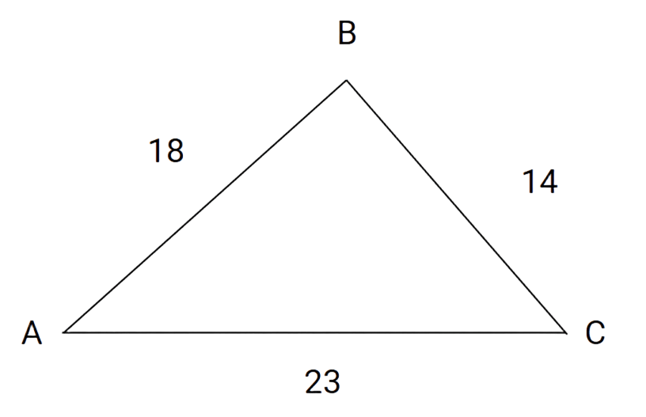
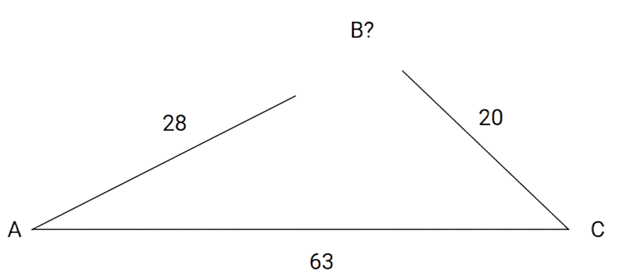
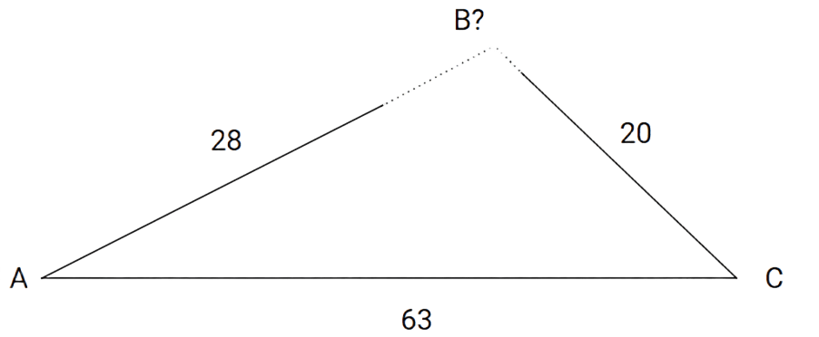

The Triangle Inequality Theorem is a set of formulas used to see if a triangle can be drawn by the length of its sides.
The formula for the triangle inequality theorem is…
The theorem states that every side of a triangle must be smaller than the sum of the other two sides. Take a triangle as an example…

The triangle has three known sides. This triangle satisfies the triangle inequality theorem as each side is smaller than the sum of the others…
All the sums are bigger than their respective sides.
Now for a triangle that doesn’t satisfy the triangle inequality theorem…

As you can see, there is a gap between AB and BC…

This is because AC is longer than both AB and BC combined…
This does not satisfy the triangle inequality theorem so a triangle with these sides cannot exist.
Now a situation where the sum of two sides is equal to one side…
If two sides are equal to one side, that means that the triangle is just a straight line instead of a triangle. This is because both AB and BC cover the same distance together as AC.
The triangle inequality theorem is used to find out if a triangle with three known sides can geometrically exist. If one side is longer than the sum of the two others, the triangle cannot geometrically exist.